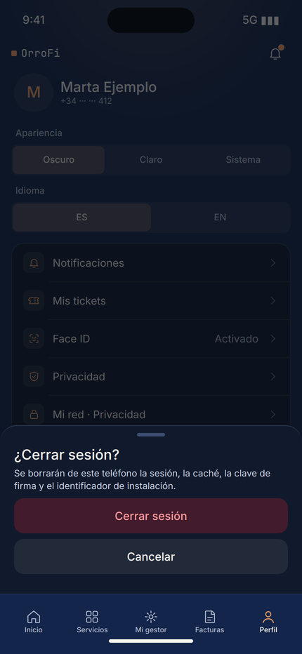
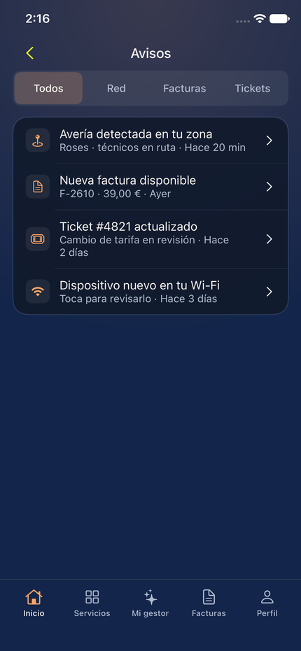

Какие уведомления присылать
Выбираете, о чём OrroFi может вам напоминать. Счёт, сбой и визит можно оставить, а лишнее убрать.

Как выглядит приложение, на каком языке говорит и о чём вам писать. Здесь же вход по лицу и выход из учётной записи.
Выбираете, о чём OrroFi может вам напоминать. Счёт, сбой и визит можно оставить, а лишнее убрать.
Ваш уголок настроек: светлая или тёмная тема, испанский или английский, вход по лицу, приватность и дверь в Mi red.

Включаете или снимаете вход по лицу. Пока защита включена, приложение встречает вас Face ID.

Выход с подтверждением, чтобы кнопка в кармане не нажалась сама и не выкинула вас из приложения.

Всё, о чём OrroFi уже рассказал, собрано лентой: сбой, счёт, визит. Открыли здесь — и не ищете то же самое в шторке телефона.

Прежде чем просить разрешение, OrroFi объясняет, зачем: сбои, счета и визит мастера. Можно отложить и включить позже.